Genel Yapı
- Localization entegrasyonu yapmamız gerekiyor Türkçe-İngilizce (Halihazırdaki siteden çekebiliriz editörün seçkisi, öne çıkan vb.. Gibi ux metinleri)
- Newsreader’ı sadece haber başlıklarında kullanalım embedding yerlerde, tüm ux metinleri (Abonelere Özel Hikâyeler, E-posta bültenlerimize abone olun dâhil) Instrument Sans kulanmamız daha modern görüntü yaratır.
- Light-Dark mode geçişlerinde bazı logoların ayarlanması lazım
- Light-Dark mode geçişlerinde bazı butonların ayarlanması gerekiyor
- İkonlar bana genel olarak biraz vibe coding havası verdi
- Menüler arasında geçişlerde linkleme hataları var, kontrol etmek gerek
Ana Sayfa
Hero
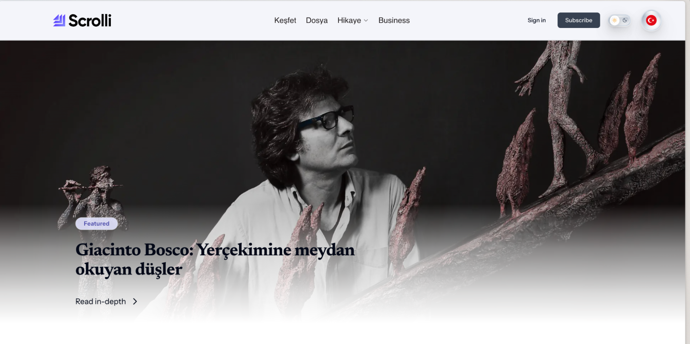
- Gradient yeterli değil, mevcut gradient dikey alan kapladığı olarak halihazırdaki sitedeki formu daha iyi, bu haliyle başlık pek okunmuyor.
- Dil yerelleştirmesi gerekiyor
Editörün Seçkisi
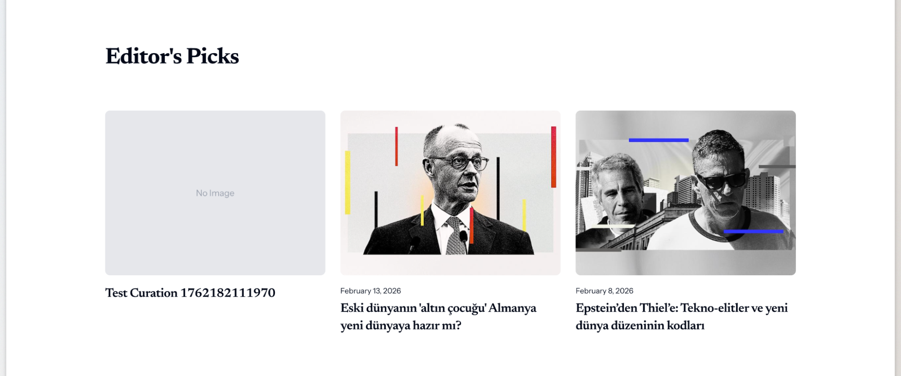
- Bu alan temiz, dil yerelleştirmesi istiyor. Editörün seçkisi yazısı ve tarih Instrument Sans olmalı, başlıklar newsreader kalmalı.
Alan 1
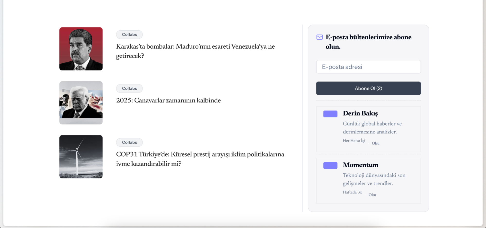
- Sağdaki mail alanında hover’la bir selection kutusu geliyor ona gerek yok,
- E-posta bültenlerimize abone olun Instrument Sans
- Mail ikonu kaldırılabilir
- Oku’larda margin sorunu var
Abonelik Banner Container 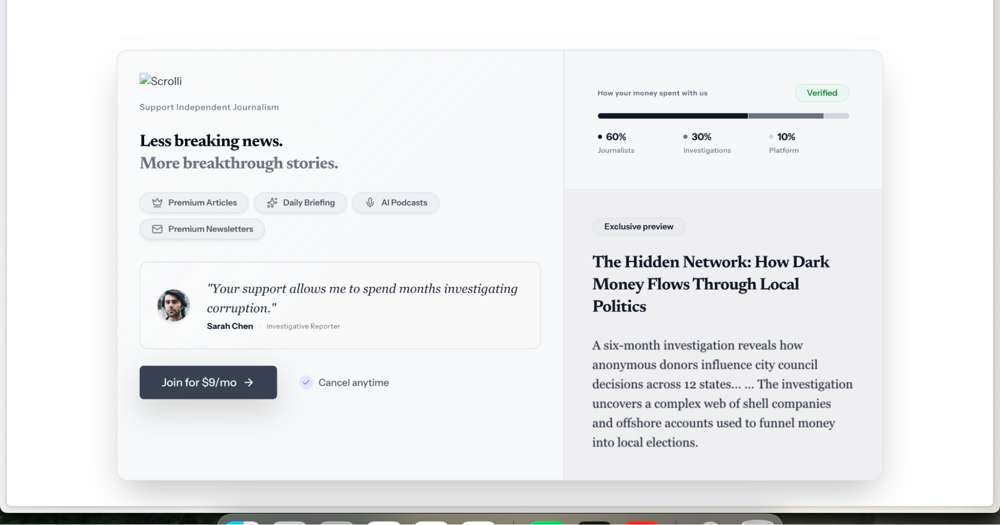
- Logo gözükmüyor
- Türkçeleştirilmesi gerek
- Testimonial biraz uzun olacaktır alttaki join for ve yaynındaki cancel yapısı biraz daha aşağıya koyulabilir alan olarak bana sıkışık geliyor biraz bu banner.
- İkonlar değiştirilebilir
- Hover edince bu alanda shadow değişimi falan yaşansa biraz interaktivite atsak zaten güzel olan bu alan daha iyi olabilir bu bir öneri ama
Scrolli+ Duyuru Alanı
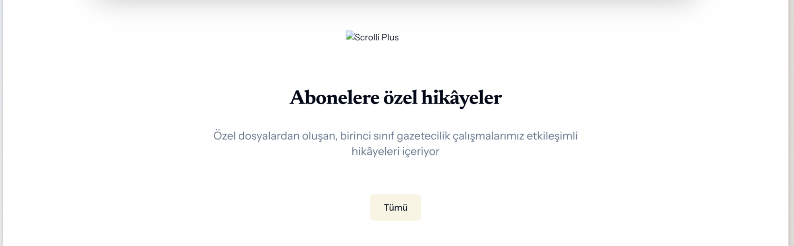
- Logo gözükmüyor
- Abonelere özel hikâyeler Instrument Sans olabilir
Netflix Slider
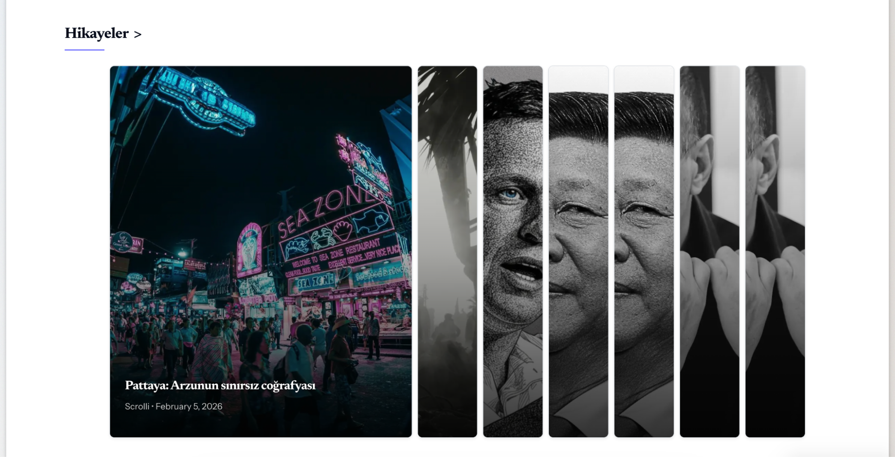
- Hikâyeler yazan alan başlığı Instrument Sans olabilir
Daha Fazla Gündem
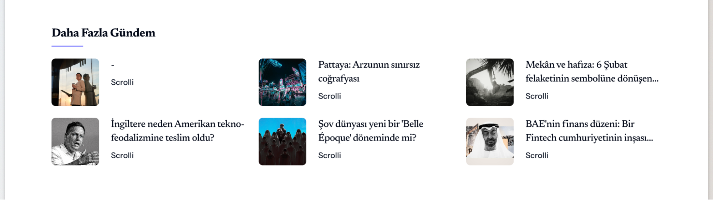
- Bu alanı bence kaldıralım
Video Slider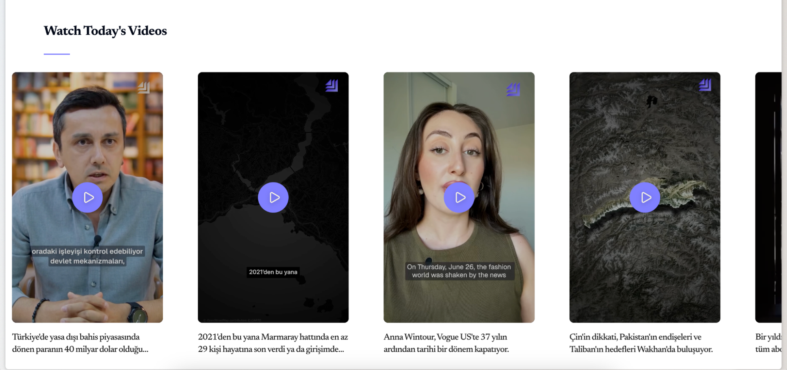
- Bu alan güzel, dil yerelleştirmesi istiyor.
Gündem CMS
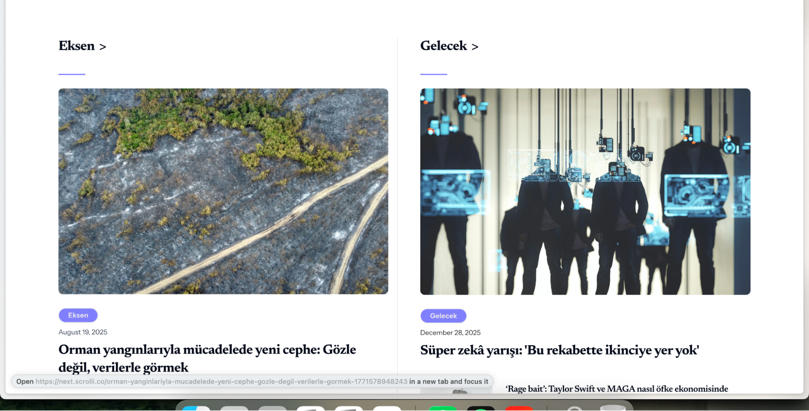
- Bu alanda kategori başlıkları Instrument Sans istiyor
- Daha seçimli gelecek bir blog list ux açısından şık olaiblir ama şimdilik kalabilir de
Podcast
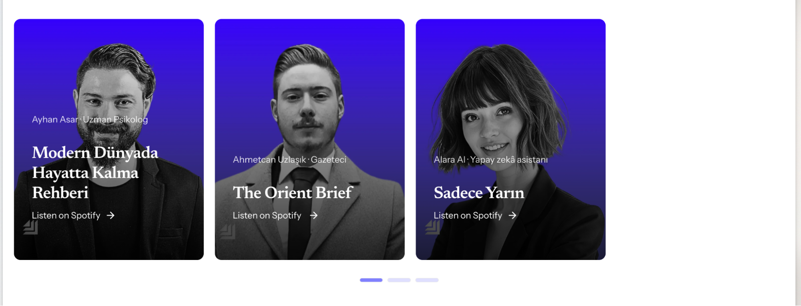
- Yeni görselleri atacağım, center aligned yapabiliriz burayı
Footer
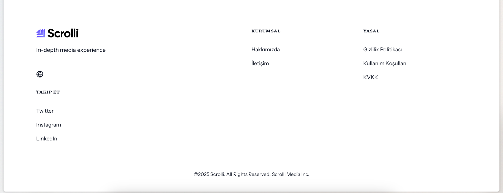
- Instrument Sans olabilr bu alan komple
- Kurumsal: Hakkımızda İletişim Künye Gizlilik Politikası KVKK Kullanım Koşulları
- Scrolli: Dosya Hikâye ScrolliCollabs Business Abone Ol olabilir gibi şu anki footer’dan alabiliriz bu kısmı
- İkon vibe coding havası veriyor çok
Hikâye Detay Kategori
Genel
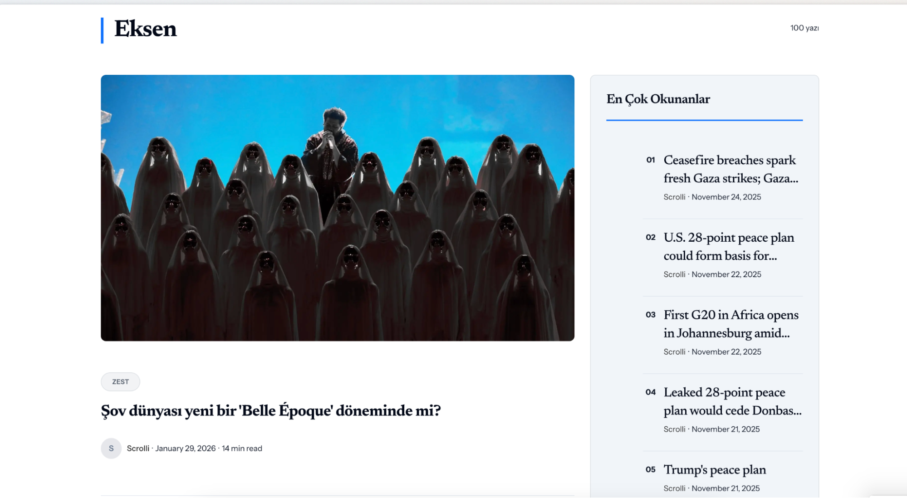
- Kategorilerdeki CMS’leri ayrı ayrı bağlamak lazım kategorilere göre
- Temel bazı margin hataları var yakınlık uzaklık vb…
- En çok okunanlar alanına bence gerek yok
Hikâye Detay Kategori
Hero
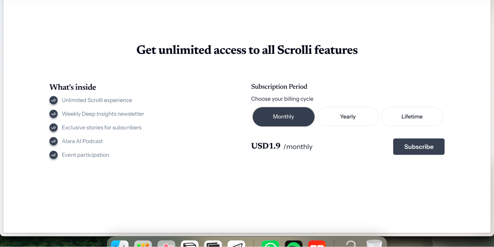
- Yerelleştirme lazım, mevcut ux metinleri halihazırdaki siteden çekilebilir.
- Scrolli+ Aylık, Yıllık ve Scrolli+Business olarak 3. Butonu koyalım. Orada contact deriz fiyat yerine.
- Scrolli+ Business değer önerilerini göndermiştim.
- Fiyat etiketi altına mock-up koyulabilir. Biraz fazla blok metin gözüküyor bu alan.
Hikâye Yönlendirme
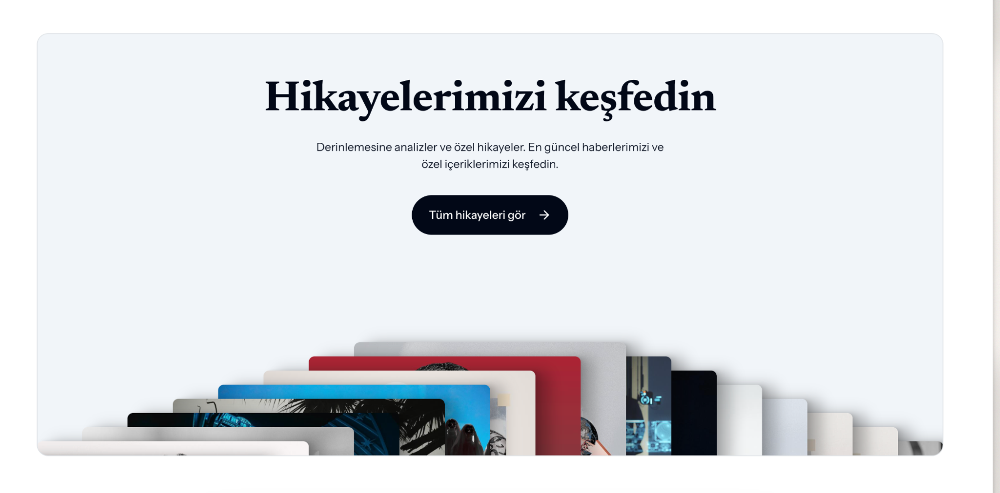
- Bu grid kart sistemi tam olmamış bence daha farklı bir yöntem çözüm bulmak lazım bu alana
Detaylı Değer Önerileri
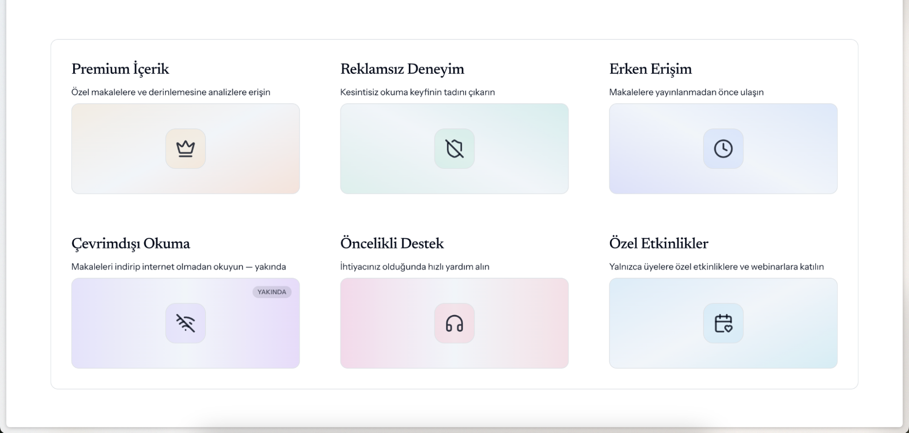
- Buraya da animative farklı bir şey lazım bence tek değer önerisi olmalı zaten yukarıda bullet olarak veriyoruz değer önerilerini. Mevcut sitedeki 360 derece dönüşüm alanı buraya koyulabilir farklı bir animative bir şey yapılarak.
Scrolli+ Business
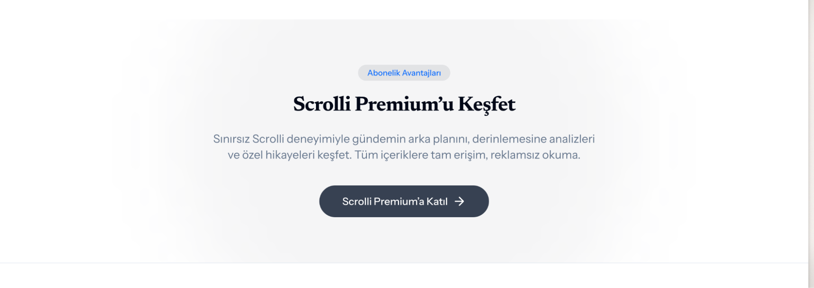
- Bu alan Scrolli+ Business olarak düşündük sanırım, buraya değer önerilerini aktaran detaylı bir alan açılabilir gibi scrollytelling yapılabilir özel buluşmalar, kapalı analizler vs. hoş olabilir.